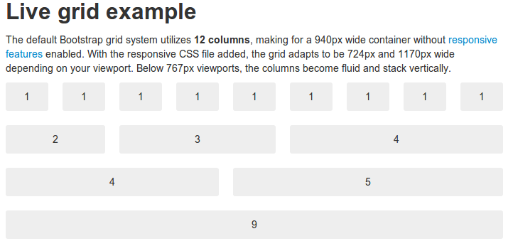
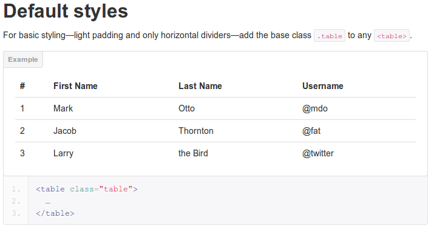
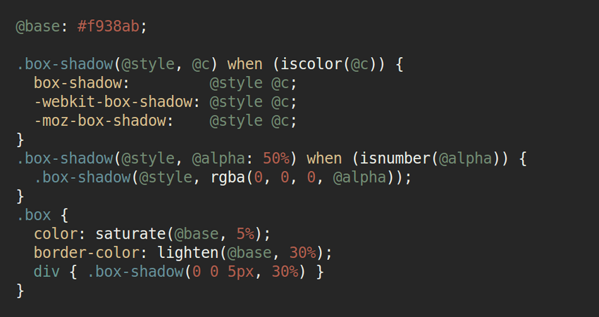

"Poly-framework"
Web applications
with Java EE
- Brian Leathem
- JAX 2013 - Santa Clara
- 2013-06-05
The plan
-
Web applications implemented with
-
multiple web frameworks
-
preserving a consistent experience
-
Who am I?
-
Senior Software Engineer at Red Hat
-
RichFaces Project Lead

The Problem...
We want to mix web frameworks so we can:
-
modernize a legacy application
-
accomodate teams with disparate expertise
-
use the best tool for the job
... use the shiny new technology
demo
https://polyglotwidgets-richfaces.rhcloud.com/Genderal considerations
-
Client-side
-
Consistent L&F
-
Consistent behaviour
-
-
Server-side
-
Shared state
-
Programming model
-
Use a CSS framework
-
Web-framework independent
-
Re-usable accross frameworks
CSS Frameworks
-
Bootstrap: http://twitter.github.com/bootstrap
-
Foundation: http://foundation.zurb.com/
-
GroundWorkCSS: http://groundwork.sidereel.com
-
Ink: http://ink.sapo.pt/
-
Gumby: http://gumbyframework.com/
-
Maxmertkit: http://www.maxmert.com/
-
Responsive Grid System: http://www.responsivegridsystem.com/
Bootstrap | Scaffolding
http://twitter.github.io/bootstrap/scaffolding.html
Bootstrap | Base CSS
http://twitter.github.io/bootstrap/base-css.html
Bootstrap | Components

http://twitter.github.io/bootstrap/components.html
Bootstrap | Customizable

http://twitter.github.io/bootstrap/customize.html#variables
http://lesscss.org/
LESS | Variables
@nice-blue: #5B83AD;
@light-blue: (@nice-blue + #111);
#header { color: @light-blue; }css output:
#header { color: #6c94be; }http://lesscss.org/#-variables
LESS | Mixins
.bordered {
border-top: dotted 1px black;
border-bottom: solid 2px black;
}mix in:
#menu a {
color: #111;
.bordered;
}
.post a {
color: red;
.bordered;
}http://lesscss.org/#-mixins
LESS | Parametric Mixins
.border-radius (@radius) {
border-radius: @radius;
-moz-border-radius: @radius;
-webkit-border-radius: @radius;
}mix in:
#header {
.border-radius(4px);
}
.button {
.border-radius(6px);
}http://lesscss.org/#-parametric-mixins
LESS | Nesting
#header {
color: black;
}
#header .navigation {
font-size: 12px;
}
#header .logo {
width: 300px;
}
#header .logo:hover {
text-decoration: none;
}#header {
color: black;
.navigation {
font-size: 12px;
}
.logo {
width: 300px;
&:hover {text-decoration: none}
}
}http://lesscss.org/#-nested-rules
LESS | Operations
@base: 5%;
@filler: (@base * 2);
@other: (@base + @filler);
color: (#888 / 4);
background-color: (@base-color + #111);
height: (100% / 2 + @filler);http://lesscss.org/#-operations
LESS | Built-in Functions
@base: #f04615;
@width: 0.5;
.class {
width: percentage(0.5); // returns `50%`
color: saturate(@base, 5%);
background-color: spin(lighten(@base, 25%), 8);
}http://lesscss.org/#-functions
Compiling Less
-
Javascript:
-
Java (less.js via rhino):
@import "lib/bootstrap/less/variables.less";
@import "lib/bootstrap/less/mixins.less";
.skin {
.rf-ac, .rf-ac-itm-hdr, .rf-ac-itm-cnt, .rf-ac-itm-hdr {
font-size: @baseFontSize;
font-family: @baseFontFamily;
line-height: @baseLineHeight;
border-color: @navbarBorder;
background-color: @white;
border: none;
}
.rf-ac {
border: 1px solid @navbarBorder;
border-top: none;
.border-radius(@baseBorderRadius);
overflow:hidden;
}
.rf-ac-itm-hdr {
border-top: 1px solid @navbarBorder;
background-image: none;
padding: 5px 15px;
color: @linkColor;
}
.rf-ac-itm-cnt {
border-top: 1px solid @navbarBorder;
padding: 10px 16px;
}
}demo
http://localhost:8000/accordion.html#!watch... and feel
-
Behaviour
-
"Moving" parts
JSF Components
 |  | |
 | ||
GWT libraries
HTML 5 widgets

jQuery UI
RichFaces Widgets
-
Standalone javascript widgets
-
Framework independent
-
Used in RichFaces 5
RichFaces Widgets
-
Event based architecture
-
Loosely coupled to backend framework
Example
PickList Widget:
Server-side
-
Shared server state
-
Consistent programming model
-
Front-end independent
CDI
CDI | Dependency Injection
Retrieve a contextual instance of a Bean
public class CapitalsObserver {
@Inject
CapitalsBean capitalsBean;
@Inject @Push(topic = "capitalsSelected")
private Event jsfEvent;
...
} CDI | Contexts
-
Scope:
-
determines lifecycle of instances
-
maps clients to instances
-
-
Context:
-
implements the scope
-
@SessionScoped @RequestScoped @DependentScoped @ConversationScoped @ApplicationScoped
CDI | Contexts
...
@SessionScoped
public class CapitalsBean {
...
@PostConstruct
public void init() {
selectedCapitals = new ArrayList();
selectedCapitals.add(capitals.get(0));
}
...
} CDI | Events
Event producer:
public class CapitalsBean {
@Inject @Server
private Event serverEvent;
...
public void setSelectedCapitals(List selected) {
this.selectedCapitals = selected;
serverEvent.fire(new CapitalsSelected(selected));
}
} CDI | Events
Event observer:
public class CapitalsObserver {
public void observeClientEvent(
@Observes @Client
CapitalsSelected capitalsSelected) {
...
}
public void observeServerEvent(
@Observes @Server
CapitalsSelected capitalsSelected) {
...
}
}Server Sent Events
- RichFaces
- Errai
- HTML 5/Javascript
Credits
{kind=link}
{kind=link}

"Poly-framework" Web applications with Java EE by Brian Leathem is licensed under a
Creative Commons Attribution-NonCommercial-ShareAlike 3.0 Unported License.
Based on a work at github.com.
Permissions beyond the scope of this license may be available at https://github.com/bleathem/talks/tree/master/2013-JAX.
Further reading
Stay in the loop
Project: |
|
Twitter (me): |
|
Google+: |
|
Forums: |
|
IRC |
#richfaces |
Slides: |